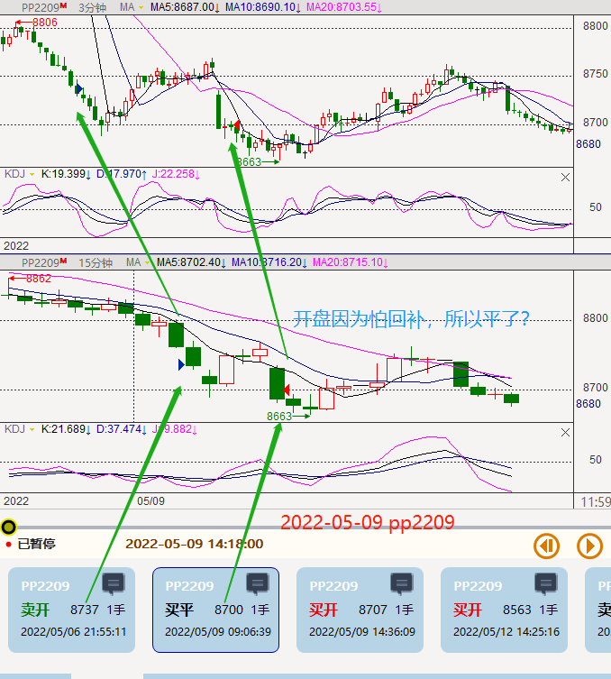
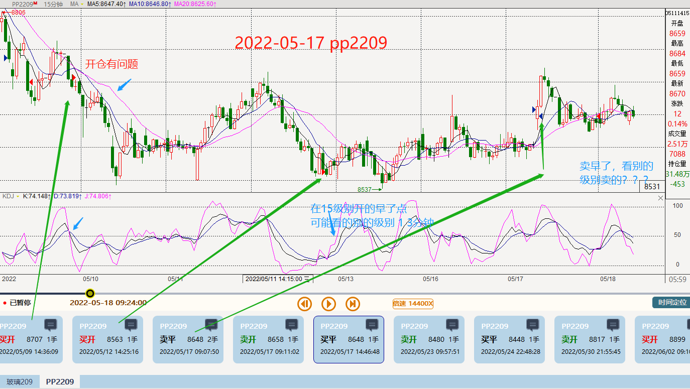
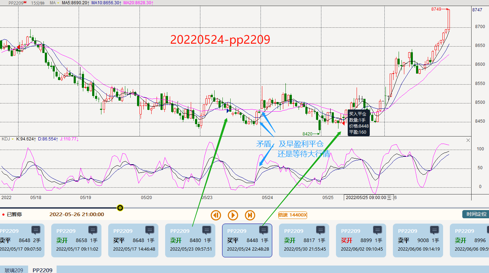
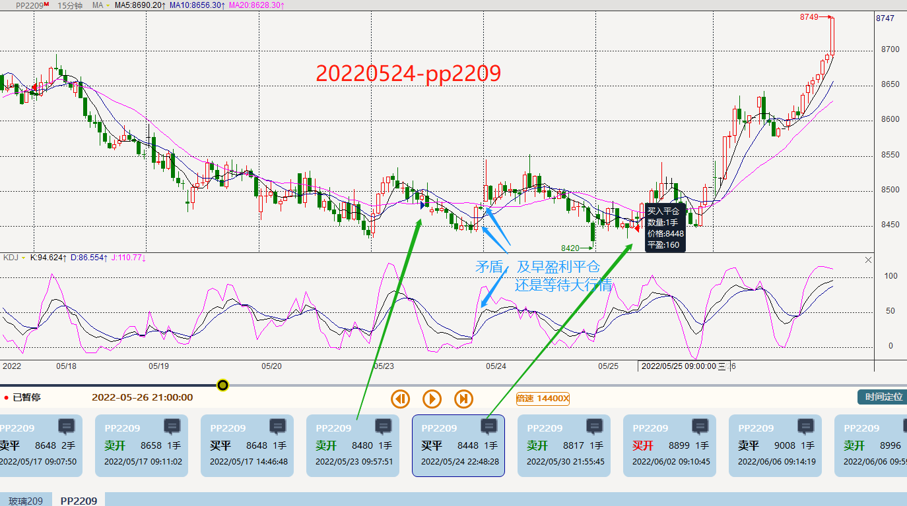
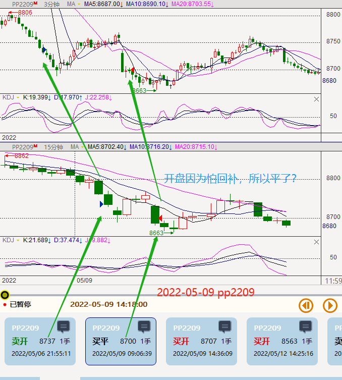
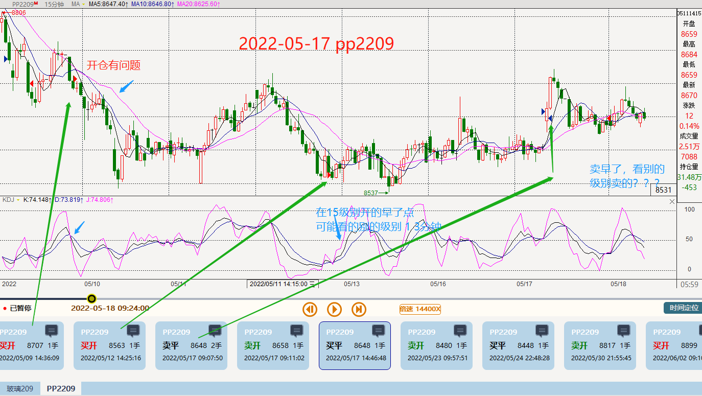
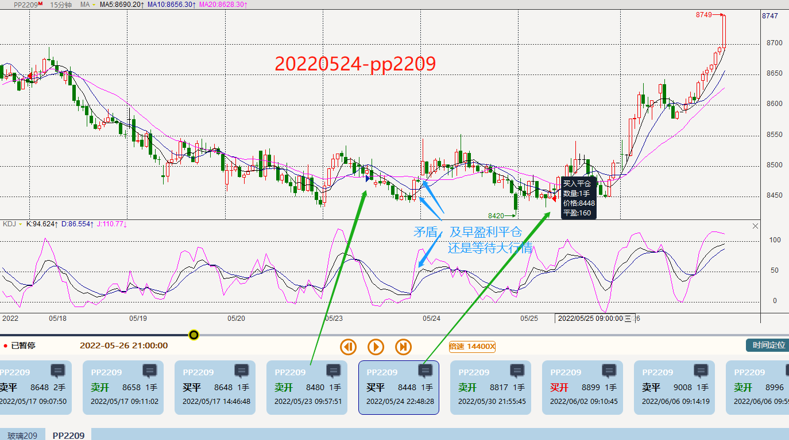
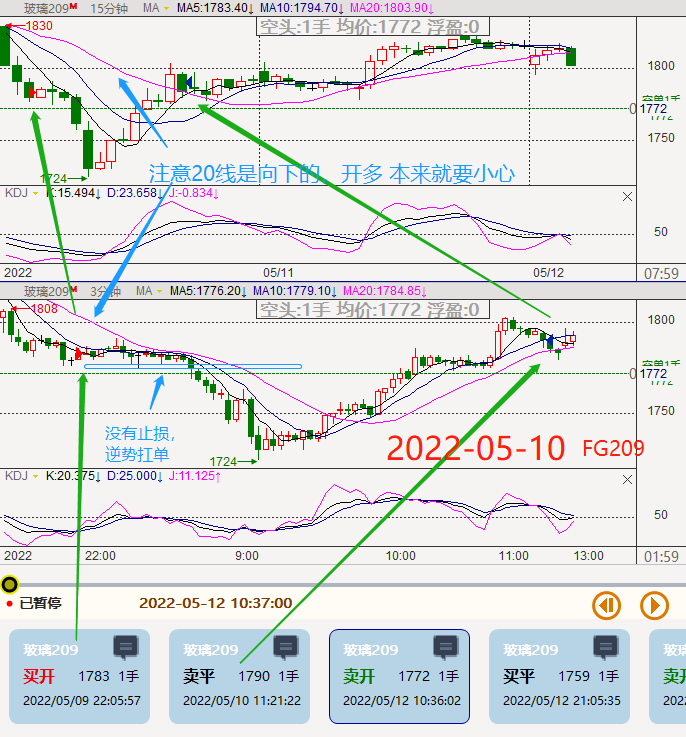
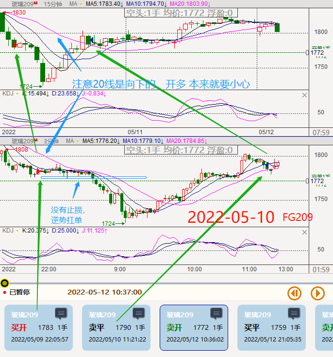

七月份记录，其中06-30有 1手 玻璃fg2209 和 1 手 pp2209,所以记录从 2022-06-30开始算起，
静心 --- 2022/07/01
静心 --- 2022/07/01
整个七月份约6k 于2022-06-30 12:50
 2022六月份主要涉及到的品种有，过滤条件 >=100 的：
甲醇MA2209 : -1480 + 40 + 40 = -1400
乙二醇eg2209 : 1310 + 130+120 +40+30 = 1630
pp2209 : 30 + 15 + 175 + 10 + 75 + 105 + 225 + 20
+ 375 + 195 +20 + 190 + 195 + 25 + 120 +75 + 215 + 25
+20 + 40 + 65 + 55 + 35 + 170 + 40 + 105 + 105 = 2725
pp2210 : 210
玻璃fg2209 : -2040 + 140 +200 +200 = -1500
豆粕m2209 : -490 + 80 +170 +40 +120 +70 +60 +110 +50 +50 = 260
（已统计到0714，下次从2022-07-15开始） 即： 豆粕m2209 :70 +60 +110 +50 +50 = 260 2022-07-23 记
合计：-1400 + 1630 + 2725 + 210 + 260 + -1500 = 1925 （2022-07-23）
2022六月份主要涉及到的品种有，过滤条件 >=100 的：
甲醇MA2209 : -1480 + 40 + 40 = -1400
乙二醇eg2209 : 1310 + 130+120 +40+30 = 1630
pp2209 : 30 + 15 + 175 + 10 + 75 + 105 + 225 + 20
+ 375 + 195 +20 + 190 + 195 + 25 + 120 +75 + 215 + 25
+20 + 40 + 65 + 55 + 35 + 170 + 40 + 105 + 105 = 2725
pp2210 : 210
玻璃fg2209 : -2040 + 140 +200 +200 = -1500
豆粕m2209 : -490 + 80 +170 +40 +120 +70 +60 +110 +50 +50 = 260
（已统计到0714，下次从2022-07-15开始） 即： 豆粕m2209 :70 +60 +110 +50 +50 = 260 2022-07-23 记
合计：-1400 + 1630 + 2725 + 210 + 260 + -1500 = 1925 （2022-07-23）
七月主要交易品种为：pp2209、玻璃FG2209、豆粕m2209
聚丙烯pp2209
  

 

玻璃FG2209 至2022-06-30




豆粕m2209
其他少量交易品种有：螺纹rb2210、 纯碱sa2209、 菜粕rm2209
螺纹rb2210:
纯碱sa2209:
菜粕rm2209: